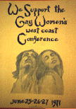

SOUTHERN CALIFORNIA LESBIAN HISTORY
Selections from our slide show which is available for classroom and group
presentations. The Lesbian Legacy Collection Archives and Library, Los
Angeles
Link
IF YOU HAVE PHOTOS OF YOUR LESBIAN ACTIVIST COMMUNITY, SEND US ONE OR TWO
AND WE WILL PUT THEM UP ON A LESBIAN COMMUNITIES WEB SITE, ALONG WITH
TEXT AND CREDITS.
CONTACT: retter@skat.usc.edu
The Women's Center at Crenshaw near Olympic was in the first few years of
the 1970's, a hub of feminist and lesbian activism. The left door led to
the room where Lesbian Feminists met every Tuesday evening. This high
energy group sponsored gay-straight dialogues, hosted a weekly
coffeehouse, organized a "sisters give rides to sisters" campaign,
participated in anti-war marches and worked with NOW members to pass the
latter's pro-lesbian resolution in 1971.

One of the first Lesbian Conferences was held in 1971 at the MCC Church on
Union
Street. Over 350 women came from several states. It was organized
by various L.A. lesbian groups.
The First National Lesbian Kiss-In was held in front of the LA County
Museum of Art in November of 1973. It was organized by lesbians from the
Westside
Women's Center, the Gay Community Services Center and former
members of Lesbian Feminists (by then defunct). App. 50 women
showed up and when the clock struck noon, began
to kiss. This action
was to protest the lack of "permission" lesbians had to display affection
in public.
In 1974, Lillene Fifield and Brenda Weathers obtained a government grant
for the then
unheard of sum of 1 million dollars for a 3 year program, to provide
alcohol prevention and
recovery services for women/lesbians. In 1997, ACW is one of the
longest-lasting lesbian organizations in the country serving women of
any sexual orientation.
 Irene Weiss (L) and Marilyn Murphy (R). In 1975, they helped found the
Califia Collective which
became famous for its week-long retreats and notorious for its class and
race workshops. In the 1950s, Irene helped found an early chapter
of the first known lesbian organization in the U.S., DOB (Daughters of
Bilitis). Marilyn was active
during the 1970s and 1980s and wrote a
monthly column for the Lesbian News. They influenced politics at The
Pagoda, when they move to
the women-only enclave in Florida. They now live in Arizona in a lesbian
retirement community and spend summers in a women's enclave in Washington.
Irene Weiss (L) and Marilyn Murphy (R). In 1975, they helped found the
Califia Collective which
became famous for its week-long retreats and notorious for its class and
race workshops. In the 1950s, Irene helped found an early chapter
of the first known lesbian organization in the U.S., DOB (Daughters of
Bilitis). Marilyn was active
during the 1970s and 1980s and wrote a
monthly column for the Lesbian News. They influenced politics at The
Pagoda, when they move to
the women-only enclave in Florida. They now live in Arizona in a lesbian
retirement community and spend summers in a women's enclave in Washington.
Lesbians of Color was a Los Angeles group active from 1978-1985.
It conducted many anti-racism workshops in Los Angeles. It also
organized the first National
Lesbians of Color Conference in 1983 (in Malibu, California).
Over 220 women of color, both lesbian and not, attended.
The first Old Lesbians Conference, was held at
California State University, Dominguez Hills in 1987. Over 250 women
over the age of 60 attended. Out of that conference came Old Lesbians
Organizing for Change, a national organization.
Credits:
Marilyn and Irene. Photographer unknown (Gift from Maria Diaz to the
LLC).
Copy of the original poster for the Gay Women's Conference is located
at the Lesbian Legacy Collection (LLC).
Copies of the original posters for the Lesbian Kiss-In and Old Lesbians
Conference are located at the June Mazer
Lesbian Collection in West Hollywood.
LOC photographer unknown (Gift from Lydia Otero to the LLC).
Women's Center and ACW photo by Yolanda Retter.